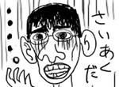
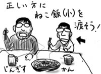
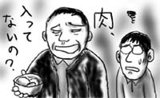
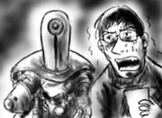

今日は部署でボウリング大会でした．
こういった仲良しイベントには総じて抵抗を感じがちな僕ですが，今回はなんか人間関係に負けて出席にしておきました(心がけがよくありません)．
しょっぱなからストライク2連続などという未だかつてない好調な滑り出しに自分でも驚いたのですが，その後は山あり谷あり，具体的にはストライク or DIEという意味不明のスコアとなりました．スペアを一回も取れないので得点効率もすこぶる悪く，そのプレイスタイルから「すごくムラがある」「詰めが甘い」という僕の正体がみんなにバレてしまいました．

こんなことだから居残り仕事でもしていればよかったんだ．
しかし，後悔しても始まらないので，今後はボウリングのプレイスタイルを仕事の詰めの甘さの言い訳にしていきたいと思います(変なところで前向き)．
雨が降ったので，家でだらだらしていたら，ぐーぐー寝てしまって気がついたら外が薄暗かったのでもっと寝たら夜中にぐーぐーお腹が空いた．
びゅーびゅーと寒かったけど仕方ないので外に出たら，あらゆる車に霜が降りていてなまら寒い感じだったので走りながらコンビニ目指し，やおら肉まんとチキンラーメン(小)を買って小走り帰って小腹を満たしたら，これが眠くなって来たので寝た．
最悪だ．

ニシハラさんと秋葉原から神田あたりまでをウロウロ．
昼に目が覚めた時はぽかぽか暖かく，冬用コートで出かけなくてもよいのではないかと思ったのですが，歩いているうちに風が冷たく，気温ががんがん下がって来たので，出すのが面倒くさいという理由で薄手のコートを着て行かなくて本当によかったと思いました．面倒くさがりは身を助けるなぁ！(間違い)
せっかくだから神保町の古書街もちょっと覗いてみたのですが，SF的には魅力的な店舗は少なく，掘り出し物も特にありませんでした．早川を揃えているお店には必ず『破局のシンメトリー』があるのが謎と言えば謎です．
その後，新橋まで移動してニシハラさんお勧めのジンギスカン屋でラム肉をパクつきました．羊肉は多少癖があるのに嫌味がなくてよいですね．
しかし，こういう外食をするといかに自分が小食であるかを痛感します．というか世間の成年男子は飯食いすぎでは？(余計な心配)．今回もニシハラさんと僕で「ねこ飯(かつお節ご飯)」の大と小をそれぞれ注文したところ，店員は一点の迷いも無く僕に小を差し出してくれました．ヤー！

こんな風体だから，たまに会う親戚などから，必ず第一声で「ちゃんとご飯食べてる？」と訪ねられるのです．食べてますよ！というか痩せているのは顔だけで腹はつまめます(つまめ！)．
食堂で50くらいのおじさんが，定食の肉じゃがを手に「肉入ってないの？」と店員のお姉さんに食ってかかっていました．虚をつかれて何を言われているのか理解できない配膳のお姉さんに向かって，再度「肉入ってないの？」としつこく食い下がるおじさん．次の瞬間には「肉入ってないなら，もういい」と肉じゃがを突き返してどこかへ消えてしまいました．どこへ行く．
一応肉は入っているように見えたんですけど，そんなに大量に食べたかったのでしょうか．
ああいう人って相手が若い女性だからあんなに偉そうなんであって，配膳が大人の男性だと何も言わなくなりがち．10年後には，僕らの払う年金で，思うがまま「肉:じゃが=9:1」でも食べやがって下さい．やり切れないなぁ．

今日は「ゲームボーイアドバンスSP」の発売日です．なんとなく欲しくなったので，早めに会社を抜け出して近所のおもちゃ屋を回ってみたのですが，予想通り全滅でした．無駄なお金を遣わずに済んでよかったなぁ．
「メトロイドフュージョン」も買おうかと思ったのですが，なんかパッケージ裏の写真があまりにしょぼくて不安になったので，そのまま帰ってきました．アクションゲームはボス戦重視ゲームの方が好みの僕ですが，メトロイドはあきらかに道中重視ゲームですしね．かといってロックマンみたいなのも困るのですが．…あれ？…そういうのはほとんどないよ？…ゲームボーイアドバンス？(物欲消滅)
帰宅したものの，冷蔵庫に何も入っていなかったので食料調達に出かけ，ついでに近所の古本屋に寄りました(またか)．
いつものように本を物色していると，ページの隙間から紙切れがひらひらと落ちてきました．拾い上げて確認すると，切手の貼られていないハガキと小さなメモ用紙でした．
そこには，女性から彼氏に宛てたラブラブな伝言が書き連ねられています．「明日は久しぶりのデートでとっても楽しみ」「早起きしなくちゃいけないから，これからは11:30には寝るね」「体調を壊さないようにがんばってネ」といった自分の気持ちや相手を気遣う言葉が，とても丁寧な文字で書き込まれています．読んでいると，こちらが照れてしまいそうです．
とまぁここまでは，たまに聞く話なのですが…．
何でそんなラブラブで乙女チックな手紙が，『バーサーカー 皆殺し軍団』に挟まっているのですか．

二人とも無事ですか！